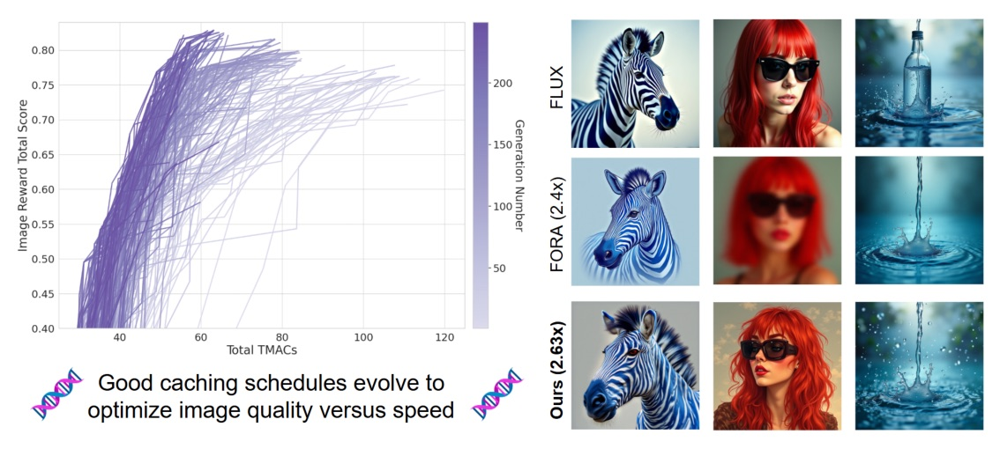
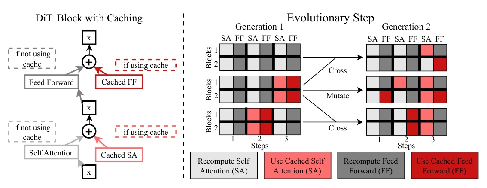
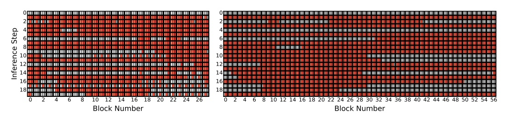

把 Diffusion Transformer 的 feature cache 從手調規則，改成可選擇的 speed–quality Pareto frontier。

不是問「cache 幾次」，而是搜尋：
哪個 component、哪個 block、哪個 denoising step 可以不重算。
cache schedule = multi-objective optimization
minS ( C(S), Q(S) )

| method | latency ms/img | speedup | COCO FID | MJHQ FID |
|---|---|---|---|---|
| No cache | 165.74 | 1.00x | 24.84 | 9.75 |
| ToCa N=3 R=90% | 70.58 | 2.35x | 24.01 | 11.80 |
| ECAD fastest | 64.24 | 2.58x | 19.54 | 8.67 |
| setting | latency ms/img | speedup | Image Reward | COCO FID |
|---|---|---|---|---|
| No cache | 2620.09 | 1.00x | 1.04 | 25.76 |
| ECAD fast | 1016.59 | 2.58x | 1.04 | 21.61 |
| ECAD fastest | 778.17 | 3.37x | 0.89 | 26.66 |

| generations | latency ms/img | speedup | Image Reward | MJHQ FID |
|---|---|---|---|---|
| 1 | 145.09 | 1.14x | 1.00 | 9.40 |
| 50 | 92.76 | 1.79x | 0.98 | 7.97 |
| 500 | 76.52 | 2.17x | 0.96 | 8.49 |
| schedule discovery | evaluated model | extra generations | speedup | MJHQ FID |
|---|---|---|---|---|
| PixArt-alpha | PixArt-alpha | 200 | 1.76x | 8.00 |
| PixArt-alpha | PixArt-Sigma | 0 | 1.62x | 9.27 |
| PixArt-alpha -> Sigma | PixArt-Sigma | 50 | 1.98x | 8.91 |
| setting | latency s/img | speedup | Image Reward | COCO FID |
|---|---|---|---|---|
| No cache | 18.30 | 1.00x | 1.14 | 25.45 |
| ECAD fast 256->1024 | 6.96 | 2.63x | 1.05 | 26.69 |
ECAD 的增益不是「cache 更多」，而是
把不可重算的地方留下，把可重用的地方找出來。
把 cache policy 視為可搜索的 Pareto object，
比把它寫成固定 heuristic 更符合部署現實。
We propose a different paradigm that does not rely on human-defined heuristics or hyperparameters, instead discovering effective caching schedules via genetic algorithm.
作者不依賴人手定義的 heuristic 或 hyperparameter，而是以遺傳演算法找出有效 cache schedules。§1 p.2
Reducing the number of images per prompt is not notably harmful, while using a smaller set of only 33 prompts is very detrimental.
減少每個 prompt 的影像數沒有明顯傷害；但把 prompt 集合縮到僅 33 個則非常不利。§4.4 p.9
OpenReview reviewer JSON was unavailable via automated retrieval (HTTP 403); this deck does not synthesize reviewer scores.
Tomorrow: video generation / temporal models